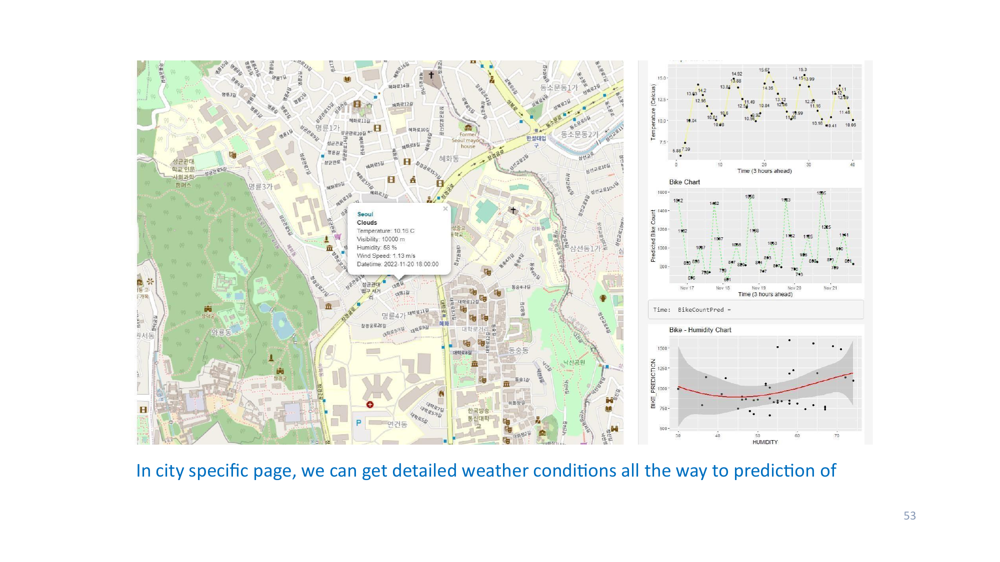

Seoul Bike-Sharing Demand Prediction
Predicting hourly bike-sharing demand in Seoul from weather conditions — combining rental records, live OpenWeather API feeds, and web-scraped global bike-system data into tuned regression models (compared on RMSE and R²) and an interactive R Shiny + Leaflet dashboard. Temperature emerged as the strongest demand driver. IBM Applied Data Science with R capstone.
View on GitHub →